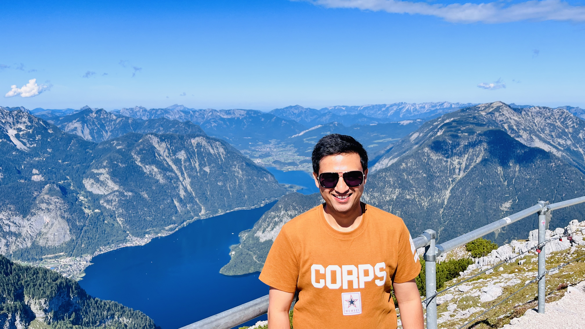

Senior AI Data Scientist, Ph.D.
Pushing the boundaries of science and engineering through rigorous research, innovative thinking, and impactful publications. Dedicated to advancing knowledge at the intersection of technology and discovery.

I am a Senior AI Data Scientist at Smart Labs AI GmbH, focused on designing and delivering practical artificial intelligence solutions for real-world problems.
My work combines machine learning, deep learning, and data-driven engineering to build reliable models, improve decision-making, and translate research into measurable business impact.
Based in Augsburg, Bayern, Germany, I value collaboration, curiosity, and execution to create scalable AI systems that deliver clear outcomes.
Machine Learning, Deep Learning, Model Development, Feature Engineering, Classification, Regression, and Forecasting.
Data Analysis, Statistical Modeling, Experimental Design, Time Series Analysis, and Insight Generation from structured and unstructured data.
Python, SQL, NumPy, Pandas, scikit-learn, TensorFlow, and PyTorch for end-to-end AI and data workflows.
Model Validation, Production Deployment, Monitoring, Reproducible Pipelines, and continuous improvement of AI systems.
Applied AI engineering on scalable infrastructure with practical focus on reliability, performance, and maintainability.
Translating technical work into measurable outcomes through stakeholder alignment, solution design, and data-driven decision support.
Augsburg, Bayern, Germany · On-site
Leading end-to-end AI system design for enterprise clients — from prototype to production. Responsible for deep learning architectures, RAG pipelines, agentic workflows, and self-hosted LLM infrastructure.
[1] AI-Powered Behavioral Biometrics & User Verification
Designed and benchmarked CNN-based deep learning architectures for secure user verification, achieving 95% accuracy. Built similarity-learning pipelines and led ablation studies with CI-integrated validation workflows.
[2] AI-Driven Customer Analytics & KPI Monitoring Dashboard
Led end-to-end development of a Streamlit dashboard for KPI monitoring, behavioral clustering, and group-wise segmentation to support data-driven stakeholder decision-making.
[3] Self-Hosted Enterprise RAG Platform for Secure Document Intelligence
Architected a secure RAG platform using Ollama, vLLM, and n8n for multi-step agentic reasoning, intelligent document routing, and access-controlled retrieval in Docker Compose.
Karlsruhe, Germany · 2.9 years
Built and deployed ML/AI solutions across diverse domains including NLP-powered requirement analysis, railway operations analytics, and AI-based predictive maintenance. Designed full MLOps pipelines on Azure and AWS.
[1] LLM-Powered Jira Requirement Analysis Assistant
Integrated LLMs to extract insights from Jira tickets, translate unstructured text into structured user stories, identify ambiguities, and generate requirement summaries and impact reports.
[2] ML-Based Railway Operations Analytics (MLOps)
Led ML model development for automated data processing and predictive analytics in railway ops. Designed MLOps pipelines for CI/CD model deployment, monitoring, and interactive stakeholder dashboards.
[3] AI Predictive Maintenance — Windmill Blade Fault Detection
Developed a Hybrid CNN model achieving 91.8% accuracy for fault classification on radargram images. Applied LIME-based Explainable AI and reduced maintenance costs by 30%.
Lille, France · 2 years
Researched explainability in Visual Question Answering (VQA) systems. Developed post-hoc interpretability methods combining NLP and computer vision to make multimodal deep neural networks transparent and understandable for end-users.
Kyoto, Japan · 1.7 years
Applied NLP and machine learning to improve the accuracy of geo-tagged social media data for microscale urban analysis. Developed methods integrating textual context with geospatial information for precise physical location mapping.
India · 2+ years combined
Designed and delivered university courses on Machine Learning, Deep Learning, AI, and NLP. Supervised student research in computer vision, neural network optimization, and developed AI curricula integrating TensorFlow & PyTorch for hands-on learning.
India · 6 years
Thesis: "Study and Analysis of Quality of Services Provisioning in Wireless Sensor Networks Using Artificial Intelligence Techniques"
AI-Driven Network Optimization
Designed machine learning-based models to improve data routing, reduce latency, and enhance network reliability.
Energy Efficiency Enhancements
Developed intelligent algorithms to optimize power consumption, extending the lifespan of sensor nodes.
Real-Time Decision Making
Applied AI techniques to predict network congestion and proactively manage sensor data flow.
India · 1 year
India · 4 years
Advanced techniques in signal decomposition, feature extraction, and noise reduction for real-world sensor data and communications systems.
Developing intelligent models for classification, regression, and anomaly detection applied to engineering and scientific data.
Research in next-generation communication systems, spectrum optimization, and interference management for modern networks.
Bridging the gap between raw data and actionable insights using statistical modeling and computational methods.
Designing and conducting experiments to validate theoretical models, bridging simulation and real-world performance.
Applying engineering principles to solve challenges across healthcare, environment, and smart infrastructure domains.
Interested in collaboration, research opportunities, or just a conversation? I'd love to hear from you.